Depok
Salah satu kota penyangga Ibu Kota Jakarta yang terletak di Provinsi Jawa Barat, dikenal sebagai kota pendidikan sekaligus dijuluki "Kota Belimbing" karena hasil bumi khasnya.
Salah satu kota penyangga Ibu Kota Jakarta yang terletak di Provinsi Jawa Barat, dikenal sebagai kota pendidikan sekaligus dijuluki "Kota Belimbing" karena hasil bumi khasnya.
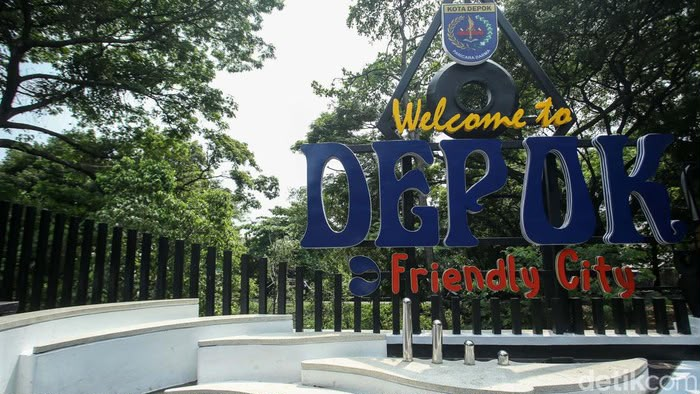
Cikal bakal Kota Depok bermula pada tahun 1696, ketika seorang tuan tanah asal Belanda bernama Cornelis Chastelein membeli lahan seluas sekitar 1.244 hektare di kawasan yang sekarang dikenal sebagai Depok Lama. Menjelang wafatnya pada tahun 1714, Chastelein mewariskan tanah tersebut kepada 150 orang budaknya dan memerdekakan mereka, tanpa memandang agama yang mereka anut.
Keturunan dari komunitas yang dimerdekakan itu kemudian dikenal dengan sebutan "Belanda Depok" dan hidup turun-temurun dengan sistem pemerintahan sendiri. Seiring berjalannya waktu, wilayah ini berkembang dari sebuah kecamatan di bawah Kabupaten Bogor, hingga akhirnya resmi berdiri sebagai kotamadya pada 27 April 1999 dan terus tumbuh menjadi kota besar seperti sekarang.
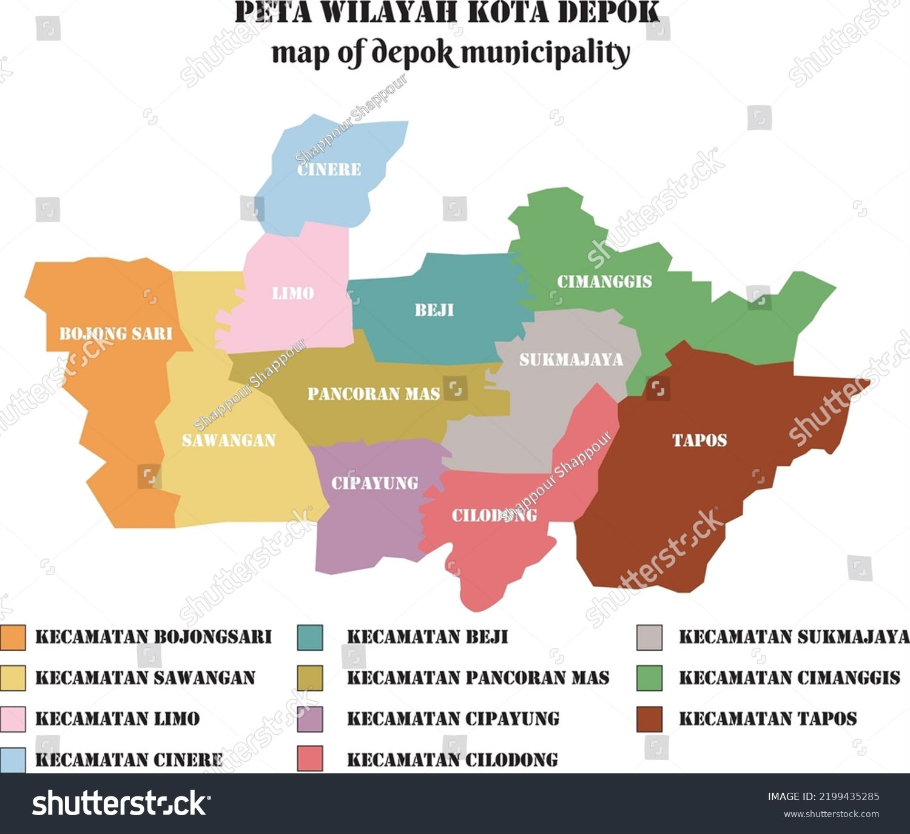
Secara geografis, Kota Depok berbatasan langsung dengan Provinsi DKI Jakarta di sebelah utara, serta dikelilingi oleh wilayah Kabupaten Bogor di sisi selatan, barat, dan timur. Posisi ini membuat Depok berperan sebagai kota penyangga yang menjadi jalur penghubung utama antara Jakarta dan Bogor.
Wilayah Kota Depok terbagi menjadi 11 kecamatan, di antaranya Pancoran Mas, Beji, Sukmajaya, Cimanggis, Tapos, Sawangan, Bojongsari, Cinere, Limo, Cipayung, dan Cilodong. Dua sungai besar, yaitu Sungai Ciliwung dan Sungai Cikeas, mengalir melintasi kota ini dan menjadi salah satu sumber daya air penting bagi warganya.
Depok memiliki beragam destinasi wisata, mulai dari wisata religi, wisata air, hingga wisata edukasi keluarga.
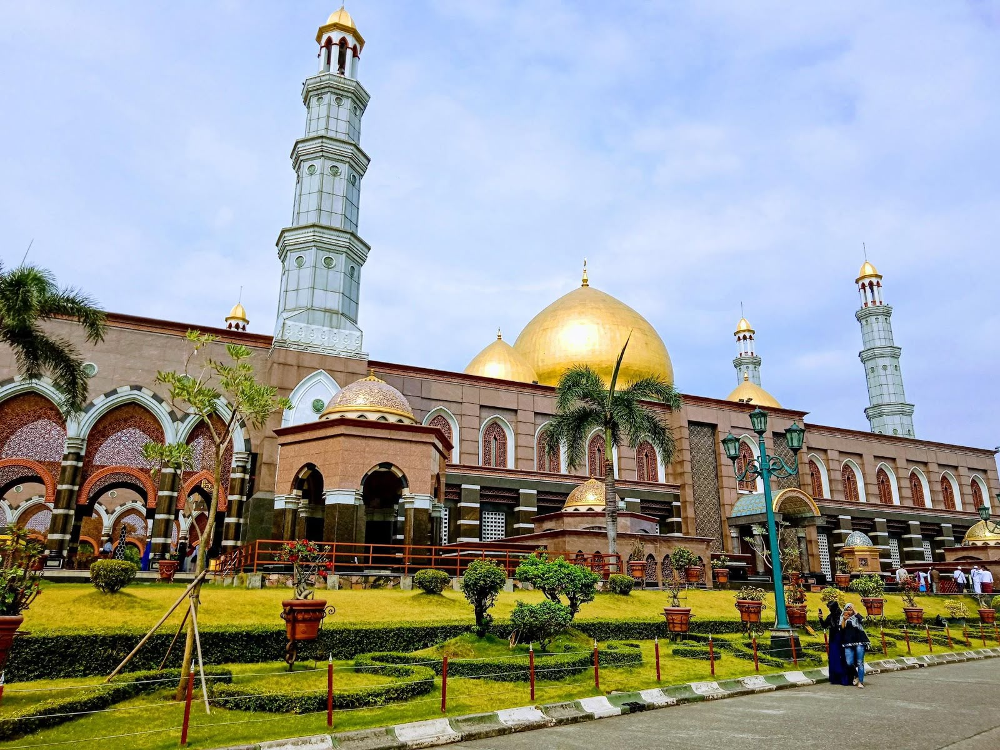
Berada di Jalan Meruyung Raya, Kecamatan Limo, masjid yang bernama resmi Masjid Dian Al Mahri ini dikenal karena lima kubahnya yang dilapisi emas. Selain menjadi tempat ibadah, kompleks masjid seluas sekitar 8.000 meter persegi ini juga menjadi destinasi wisata religi yang ramai dikunjungi keluarga.
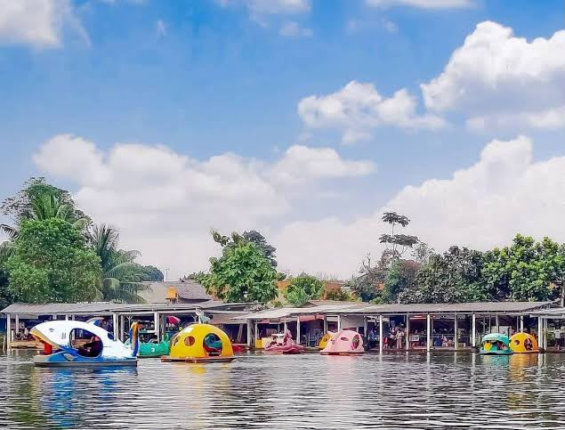
Terletak di Kecamatan Sawangan, Situ Pengasinan adalah danau buatan seluas sekitar 6 hektare yang dikelilingi pepohonan rindang. Pengunjung dapat menikmati suasana danau sambil mencoba wahana sepeda air, memancing, atau bersantai menikmati kuliner di tepi danau.
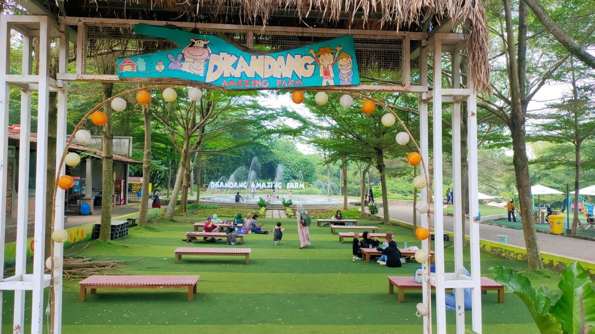
Berlokasi di Kecamatan Sawangan, tempat wisata berkonsep edukasi pertanian dan peternakan ini cocok untuk liburan keluarga. Pengunjung dapat berinteraksi dengan hewan ternak, belajar bercocok tanam, hingga menikmati suasana pedesaan yang asri.
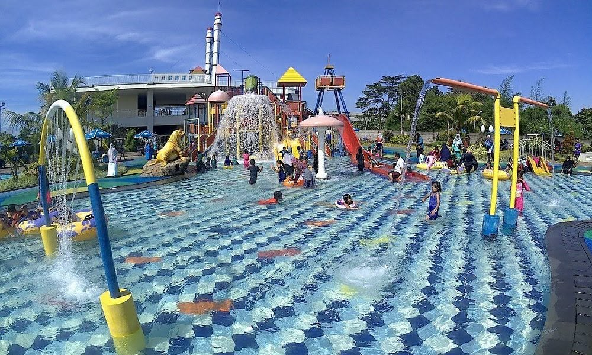
Berada di Kecamatan Cimanggis, waterpark ini menawarkan beberapa kolam renang untuk anak-anak maupun dewasa, lengkap dengan wahana seluncuran, yang menjadikannya pilihan populer untuk liburan akhir pekan bersama keluarga.
Selain destinasi wisata alam dan religi, Depok juga menyimpan sejumlah bangunan peninggalan zaman kolonial yang masih berdiri hingga sekarang dan menjadi saksi bisu perjalanan panjang kota ini.
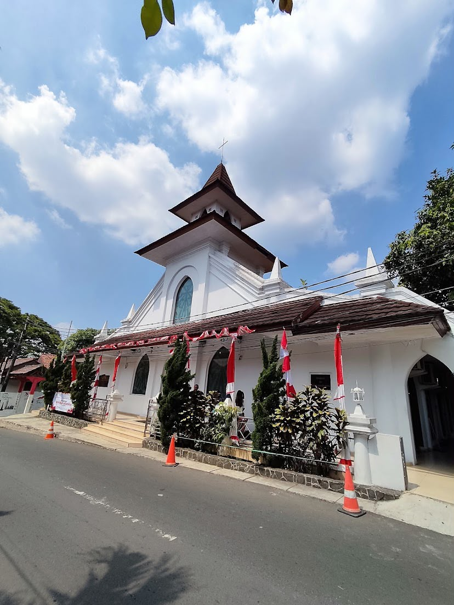
Berlokasi di Jalan Pemuda, Depok Lama, Kecamatan Pancoran Mas, gereja ini adalah yang tertua di Depok dan berdiri sejak sekitar tahun 1713-1714, tak lama setelah Cornelis Chastelein memerdekakan para budaknya. Bangunan ini masuk sebagai cagar budaya milik Pemerintah Kota Depok.
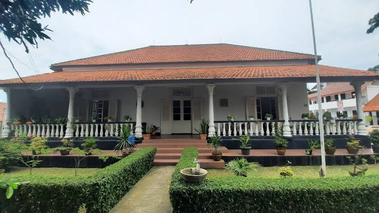
Terletak di Jalan Pemuda Nomor 72, gedung berarsitektur Belanda ini awalnya dibangun sebagai rumah tinggal pendeta yang melayani jemaat GPIB Immanuel. Sejak tahun 1950-an bangunan ini dialihfungsikan menjadi kantor sekretariat Yayasan Lembaga Cornelis Chastelein (YLCC), yang mengelola aset peninggalan sejarah Depok.
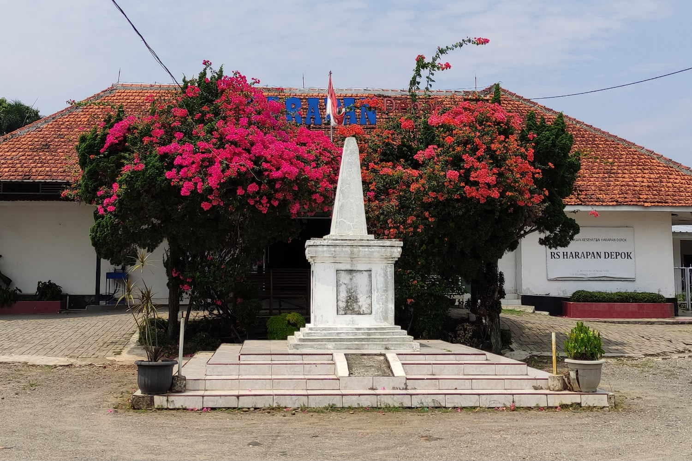
Berada di kawasan Depok Lama, tugu ini didirikan pada tahun 1914 untuk memperingati 200 tahun wafatnya Cornelis Chastelein, tuan tanah yang mewariskan lahannya kepada 150 budak yang ia merdekakan dan menjadi cikal bakal komunitas Depok.
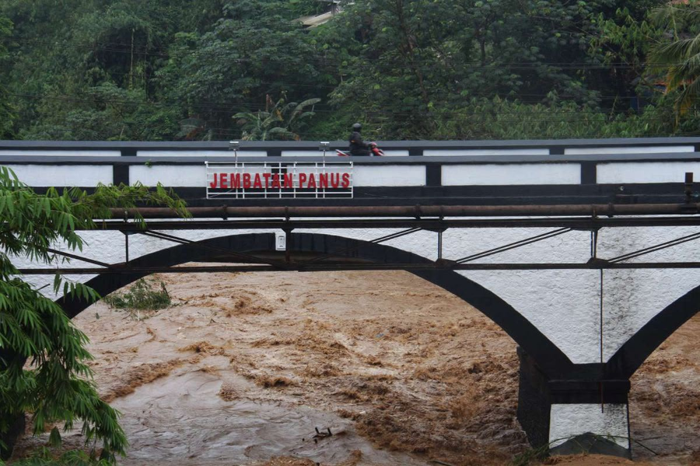
Membentang di atas Sungai Ciliwung di Jalan Siliwangi, Kecamatan Pancoran Mas, jembatan ini dibangun pada tahun 1917 oleh insinyur Andre Laurens sebagai jalur utama penghubung Depok, Bogor, dan Batavia. Namanya diambil dari Stevanus Leander, warga yang dahulu tinggal di dekat jembatan ini.
Sebagai kota yang identik dengan buah belimbing, Depok memiliki beberapa oleh-oleh dan jajanan khas yang layak dicoba.
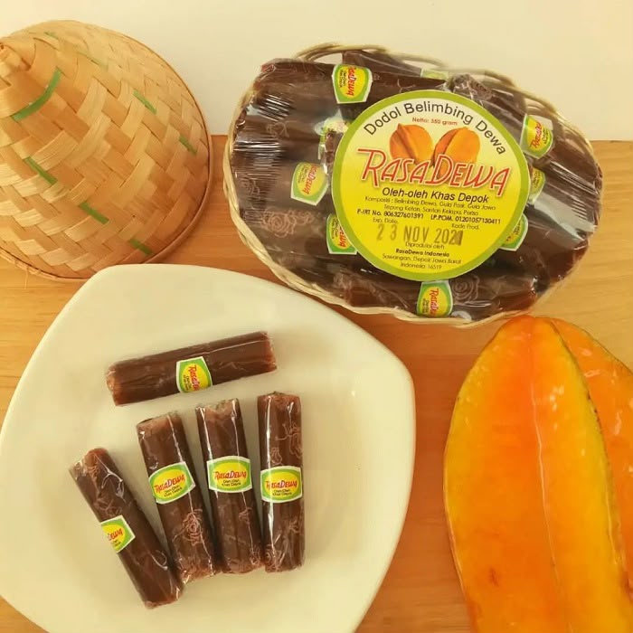
Dodol dengan cita rasa manis dan sedikit asam ini dibuat dari buah belimbing dewa, buah unggulan khas Depok, dan menjadi salah satu oleh-oleh favorit dari kota ini.
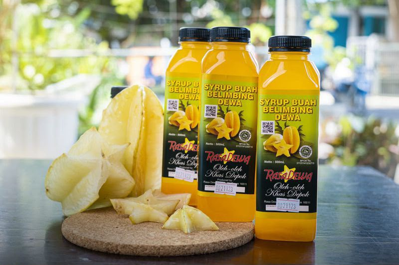
Sama seperti dodolnya, sirup ini juga diolah dari buah belimbing dewa segar dan cocok dinikmati sebagai minuman penyegar, terutama saat cuaca sedang panas.
Minuman segar berisi campuran es serut, potongan roti, alpukat, kolang-kaling, dan disiram santan serta sirup gula merah, cocok dinikmati sebagai pelepas dahaga.
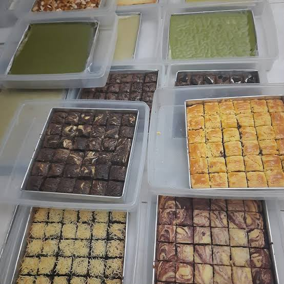
Kue basah tradisional dengan tekstur lembut berlapis ini biasa dijual bersama jajanan pasar lainnya dan menjadi camilan khas yang mudah ditemukan di Depok.